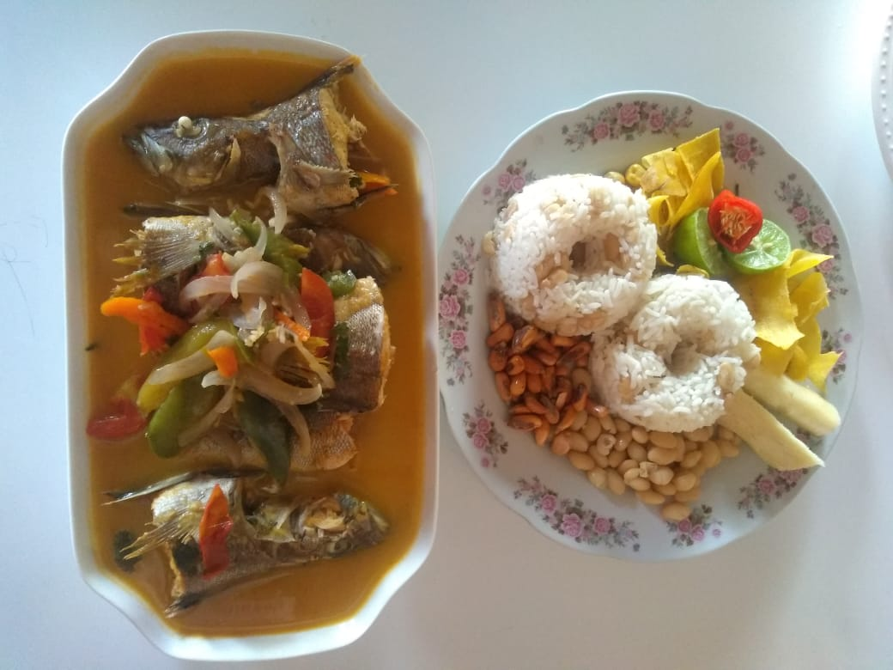

Menú
Disfruta de una experiencia gastronómica completa con nuestra sesión de menú en nuestro restaurante. Hemos diseñado cuidadosamente un menú completo que incluye una selección de entradas, platos principales y postres, todos ellos preparados con ingredientes frescos y de alta calidad. Nuestro menú ofrece opciones para todos los gustos, desde opciones vegetarianas hasta platos más elaborados y sofisticados. Además, puedes acompañar tus platos con una selección de bebidas que incluye vinos, cervezas y refrescos. Nuestra sesión de menú es la opción perfecta para aquellos que buscan disfrutar de una comida completa y variada en un ambiente acogedor y elegante.
Comida
 Ver Comidas
Ver Comidas
Bebidas
 Ver Bebidas
Ver Bebidas
SECCIÓN DE COMIDAS:
Sudado de Pescado
Precio: S/5.00
Descripcion:
¡Le presentamos nuestro exquisito Sudado de Pescado, inspirado en la tradición culinaria peruana! Este platillo está hecho con pescado fresco cocido en una deliciosa salsa de ají amarillo y tomate, con un toque de cilantro y otras especias peruanas. Nuestro Sudado de Pescado es una combinación perfecta de sabor y textura, y lo servimos con arroz blanco y yuca para completar su experiencia gastronómica peruana. ¡No se pierda este plato de sabor auténtico en nuestro restaurante!
Arroz Chaufa

Precio: S/5.00
Descripcion:
¡Pruebe nuestro delicioso Arroz Chaufa, un platillo de la comida peruana que lo transportará directamente a las calles de Lima! Este platillo fusiona la cocina peruana con la china, y consiste en arroz frito con pollo, cerdo o camarones, acompañado de vegetales y salsa de soja. En nuestro restaurante, utilizamos ingredientes frescos y auténticos para crear un sabor único y delicioso que complacerá su paladar. ¡Venga a probarlo y disfrute de una experiencia gastronómica peruana inolvidable!
Cebiche Mixto

Precio: S/5.00
Descripcion:
¡Disfrute de nuestro Cebiche Mixto, un platillo icónico de la gastronomía peruana que deleitará su paladar! Este plato está hecho con una combinación de pescado fresco, camarones y calamares marinados en limón, cebolla morada, ají y cilantro. En nuestro restaurante, utilizamos ingredientes frescos y de la más alta calidad para crear un cebiche de sabor auténtico y textura perfecta. Sirve con camote y choclo, nuestro Cebiche Mixto es un platillo imprescindible en su visita a nuestro restaurante peruano. ¡No se lo pierda!
Chicharrón de Pescado
Precio: S/5.00
Descripcion:
¡Pruebe nuestro delicioso Chicharrón de Pescado, un platillo de la comida peruana que no puede dejar de probar! Este plato consiste en pescado fresco frito en trozos crujientes y dorados, servido con salsa criolla, yuca frita y canchita. En nuestro restaurante, utilizamos pescado fresco y seleccionado cuidadosamente para crear un sabor auténtico y una textura crujiente que le encantará. Nuestro Chicharrón de Pescado es un plato lleno de sabor y tradición peruana, ¡no se lo pierda en su visita a nuestro restaurante!
Arroz con Mariscos

Precio: S/5.00
Descripcion:
¡Deguste nuestro delicioso Arroz con Mariscos, uno de los platos más icónicos de la gastronomía peruana! Este platillo está hecho con arroz cocido en un caldo de mariscos, y una mezcla de camarones, calamares, mejillones y otros mariscos frescos. En nuestro restaurante, utilizamos ingredientes de la más alta calidad para crear un sabor auténtico y delicioso que le transportará directamente a la costa peruana. El arroz suave y la combinación de mariscos hacen de este plato una experiencia gastronómica única. ¡Venga a probarlo en nuestro restaurante peruano y disfrute de una deliciosa comida!
Cachema Encebollada

Precio: S/5.00
Descripcion:
¡Disfrute de nuestro delicioso Cachema Encebollada, un platillo peruano que le sorprenderá con su sabor! Este plato consiste en un filete de cachema frito y cubierto con cebolla dorada en una deliciosa salsa de ají amarillo. En nuestro restaurante, utilizamos pescado fresco y ingredientes auténticos para crear un plato lleno de sabor y tradición peruana. El cachema, un pescado popular en la costa peruana, tiene una textura suave y un sabor delicado que se combina perfectamente con la cebolla y la salsa de ají amarillo. ¡Venga a probarlo en nuestro restaurante y disfrute de una experiencia gastronómica peruana única!